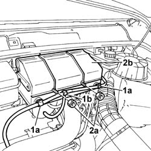
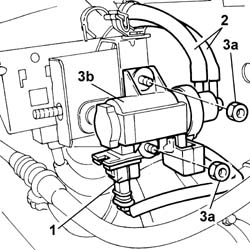

1064B38 WASTE GATE SUPERCHARGING PRESSURE ADJUSTMENT SOLENOID VALVE - R.R.
- Path
- Procedures > 10 ENGINE UNIT > 1064 TURBO CHARGING SYSTEM > 1064B CONTROL/SAFETY DEVICES > 1064B38 WASTE GATE SUPERCHARGING PRESSURE ADJUSTMENT SOLENOID VALVE - R.R.
- Kind
- repair procedure (removal / refitting; the operation number is the code)
- Applies to
- engines: 2.8 JTD 8V; all production periods
- Interactive page
- https://sloeber94.github.io/elrnDB-fDct/en/#/244000865
Applies to: engines: 2.8 JTD 8V; all production periods; only with equipment: POWER Setup
 Removing
Removing
 Refitting
Refitting
Applies to: engines: 2.8 JTD 8V; all production periods; only with equipment: POWER Setup
Applies to: engines: 2.8 JTD 8V; all production periods; only with equipment: POWER Setup
Removing
RefittingApplies to: engines: 2.8 JTD 8V; all production periods; only with equipment: POWER Setup

Applies to: engines: 2.8 JTD 8V; all production periods; only with equipment: POWER Setup
Refitting
Removing